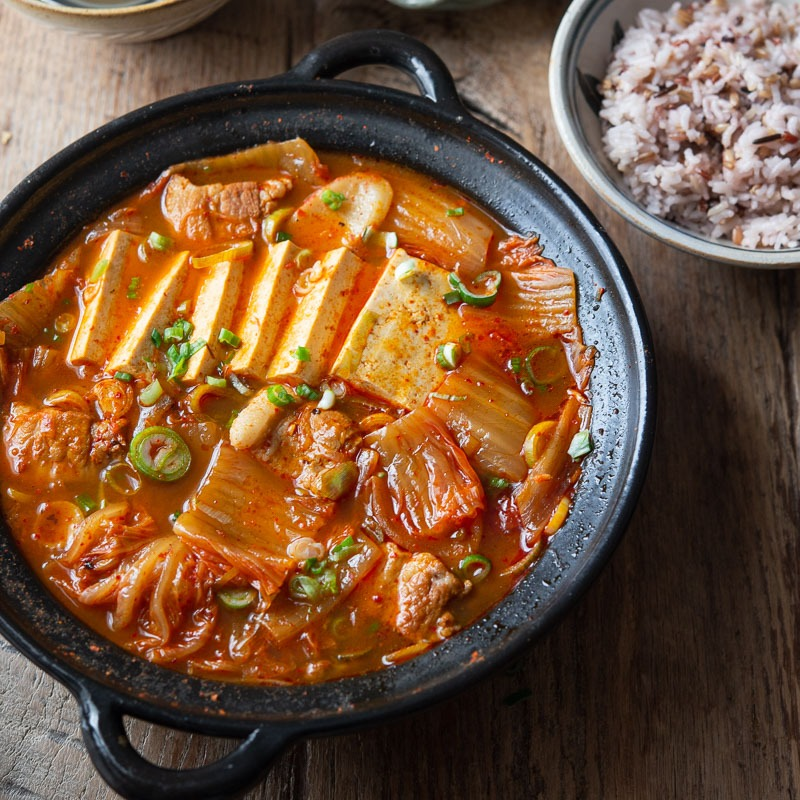

Kimchi-Jjigae (also known as kimchi stew)

Description:
One of my favorite dishes from my childhood that I think reminds me of my mom the most.
This is for you, umma!
Ingredients:
- 1/3 pound pork belly
- 1/2 square of tofu cut into 1/2 inch cubes
- 1 pound kimchi (cut into bite sized pieces)
- 1/3 cup kimchi juice
- 1 medium, yellow onion, thinly sliced
- 3 teaspoons korean hot pepper flakes (gochugaru)
- 1 tablespoon korean red pepper paste (gochujang)
- 2 teaspoons toasted sesame oil
- 3 teaspoons sugar
- 2 cups of anchovy stock (revealed later in recipe)
- 2 green onion cut into 1/4 inch diagonal slices
- 10 large, dried anchovies (guts removed)
- 1/2 cup daikon (quartered)
- 200g dried kelp
- 5 cups water
- salt to taste
Steps:
- To make the stock, combine: anchovies, kelp, daikon,
and water in a pot to boil for 25min on medium-high heat
then strain the stock from the solid ingredients
- Place kimchi with its juice, pork belly, and sliced yellow and half green onion into a pot
- Combine with sugar, pepper flakes, and stock made earlier
- Bring to boil, add the pepper paste, then cover pot and cook for 10-12min over medium-heat
- Add sesame oil and tofu, then cover and cook for another 15min
- Add remaining green onions then salt to taste
- Serve with rice!